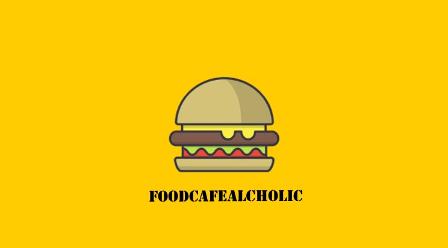

FOODCAFEALCOHOLIC
FOODCAFEALCOHOLIC
@foodcafealcoholic
🔥 每週熱門榜
🏆 專屬嚴選
🆕 最新上架
🗺️
附近地圖
★
搵食清單
0
🔍
✕
🕒
最近搜尋:
清空紀錄
🎉
場景：
全部
💑 拍拖約會
🍻 大班聚會
📸 打卡必到
🌙 深夜食堂
🐾 寵物友善
📍 地區：
🗺️ 全港所有地區 (All)
🇭🇰 港島全區 (Hong Kong Island)
🏮 九龍全區 (Kowloon)
🌳 新界全區 (New Territories)
中環 (Central / SOHO / 大館)
上環 (Sheung Wan / PMQ)
灣仔 (Wan Chai)
銅鑼灣 (Causeway Bay)
天后 / 炮台山 / 北角
鰂魚涌 / 太古
西環 / 堅尼地城 / 西營盤
黃竹坑 / 南區
尖沙咀 (Tsim Sha Tsui)
佐敦 / 油麻地
旺角 (Mong Kok)
太子 (Prince Edward)
深水埗 (Sham Shui Po)
紅磡 / 黃埔
九龍城 / 啟德
觀塘 / 九龍灣
大角咀
荃灣 (Tsuen Wan)
沙田 / 大圍
元朗 (Yuen Long)
屯門 (Tuen Mun)
大埔 (Tai Po)
將軍澳 (TKO)
西貢 (Sai Kung)
💰 預算：
不限預算 (全部價格)
$100 以下 (平民/輕食)
$100 - $300 (人氣抵食)
$300 - $600 (聚會/Cafe/特色菜)
$600 以上 (精緻/約會/高級)
🍜 菜式：
🍽️ 所有菜式 (All Cuisines)
🇯🇵 日本料理 (壽司/燒肉/居酒屋/拉麵)
☕ Cafe 咖啡 / 早午餐 Brunch
🥩 西式料理 (牛扒/意粉/Bistro)
🍲 火鍋 / 放題 / 雞煲
🌶️ 東南亞菜 (泰國/越南/南洋)
🥢 中式粵菜 (小炒/點心/大牌檔/川菜)
🍰 甜品烘焙 (蛋糕/蛋撻/麵包/糖水)
🍸 酒吧 / 微醺調酒 (Cocktails)
🍔 街頭小食 / 漢堡 / 車仔麵
重設篩選
共收錄
0
間由 @foodcafealcoholic 推薦餐廳
🎯 已套用篩選條件
電腦端滑鼠滾輪支援橫向滑動
🔥
每週熱門點擊排行榜 TOP 10 (Trending Leaderboard)
熱度即時更新
🏆
Foodcafealcoholic 嚴選推介 (Editor's Picks)
@foodcafealcoholic 本月私心之選
🆕
最新上架食評 (New Arrivals)
同步最新 IG 短片發布
🎯
符合條件的餐廳清單
0 間
✕
清除所有篩選
←
返回首頁
✕
🎬
點擊下方按鈕即可於 Instagram App 直接觀看完整 Reel 原片與留言！
📸 直達 Instagram 睇原片留言與 Like →
地區 • 菜式
場景
餐廳名稱
📍 地區
🍽️ 菜式
💰 預算
✨
KOL 推薦必點招牌 (Signature Must-Eat)
招牌菜式
食評詳情節錄
🤍
收藏
📤 分享
🗺️ 地圖導航
📅 訂座/官網
🗺️
附近食評地圖 (Nearby Food Map)
放大地圖或點擊數字氣泡展開餐廳美食相片
📍
定位我嘅位置
✕
📏 範圍：
全部
500m
1km
3km
☀️ 清晰街道
🇭🇰 香港詳細
🌙 深色
0 間
開啟定位後，這裡會按距離由近至遠排列附近餐廳
★
我的搵食清單 (My Saved List)
✕